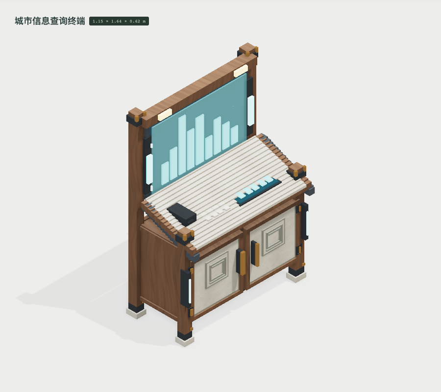
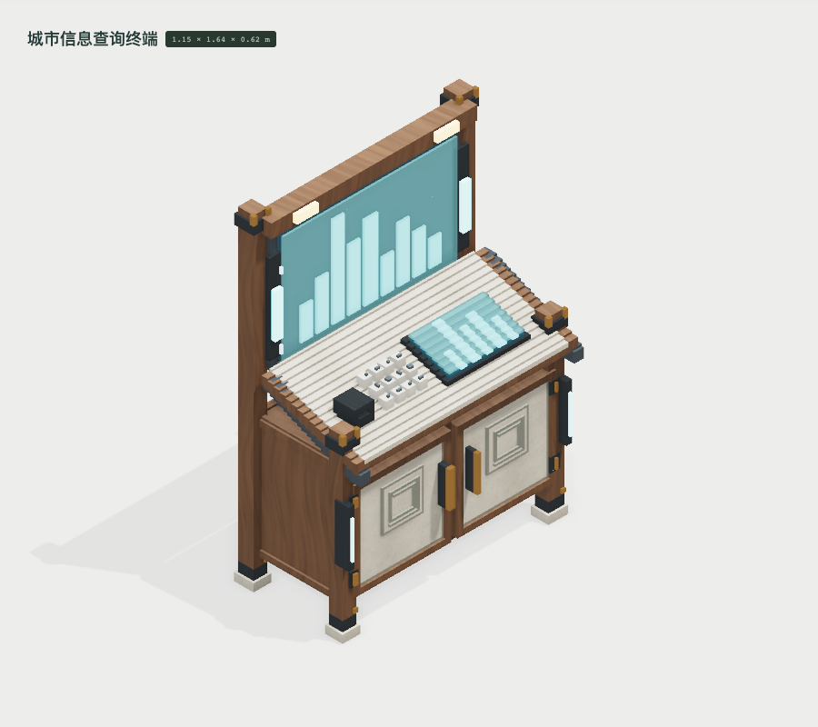
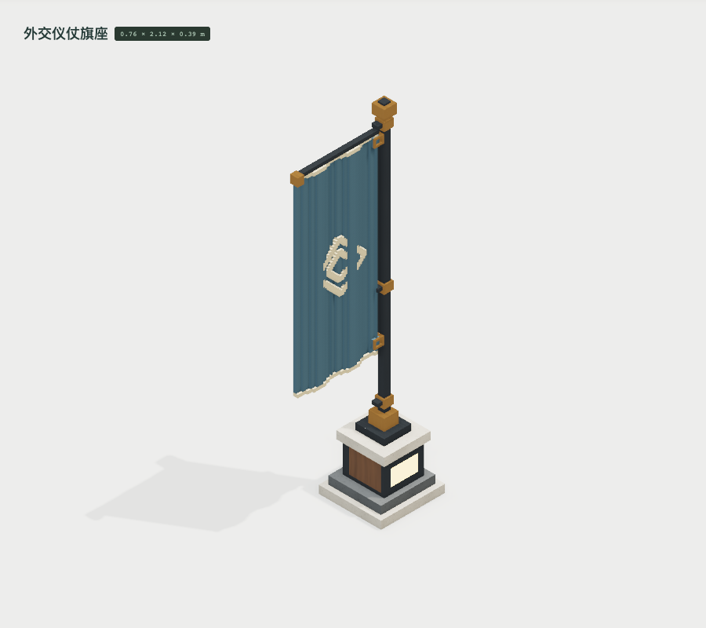
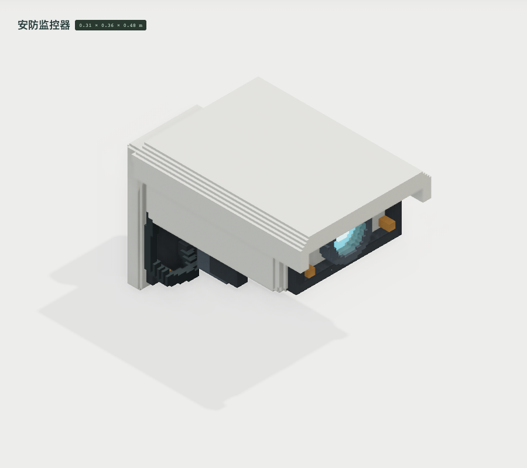
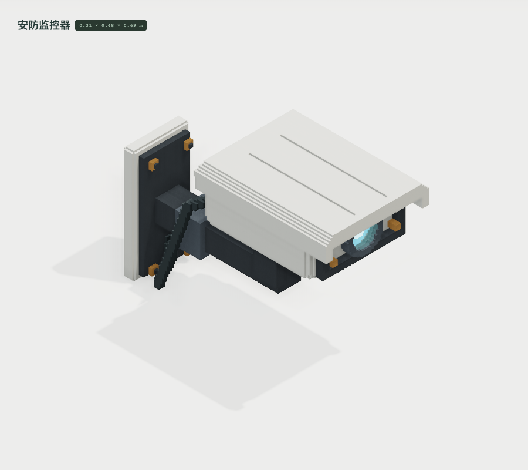

<!doctype html><meta charset="utf-8"><style>*{box-sizing:border-box}body{margin:0;font:20px system-ui,'PingFang SC';color:#263e35;background:#e1e4de}header,footer{padding:28px 40px}h1{margin:0 0 12px}h2{margin:0;font-size:24px;padding:20px 36px}section{display:grid;grid-template-columns:1fr 1fr}figure{margin:0;border:1px solid #bac4b9}img{width:100%;display:block}figcaption{padding:16px 28px}</style><header><h1>M009 三件几何修正 · 实际编辑器截图</h1>前后都使用材质试作；相同观察方向、每件独立适配画幅，不是共同米制比例尺。</header><article><h2>LIFE-147 · 斜面输入件：先前埋入台面；现在沿斜面分别构造屏、键帽与印字。</h2><section><figure><figcaption>首轮候选</figcaption></figure><figure><figcaption>修正后候选</figcaption></figure></section></article><article><h2>LIFE-148 · 织入纹样：先前平面纹样被折旗遮住；现在角色赋值贯穿已有旗布厚度。</h2><section><figure><figcaption>首轮候选</figcaption></figure><figure><figcaption>修正后候选</figcaption></figure></section></article><article><h2>LIFE-158 · 机身与支座：抬高机身、拉开悬臂间距，保留壁板、线缆和真实间隙。</h2><section><figure><figcaption>首轮候选</figcaption></figure><figure><figcaption>修正后候选</figcaption></figure></section></article><footer>参考图尚未达标。原件、体素哈希及真实截图路径记录在 visual-revision.json；这三次修正未增加基础资产数量。</footer>